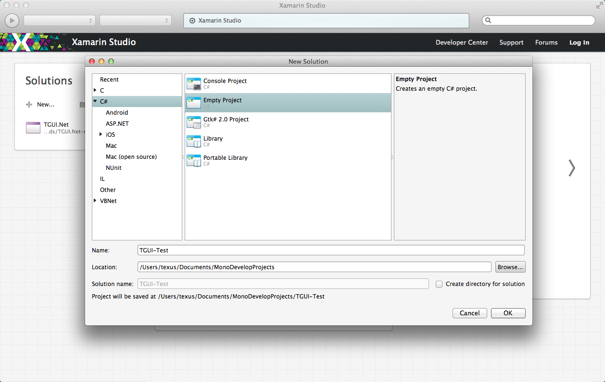
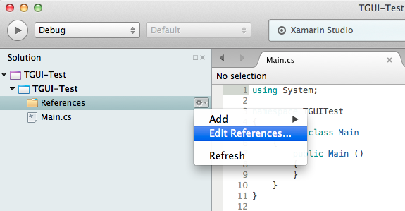
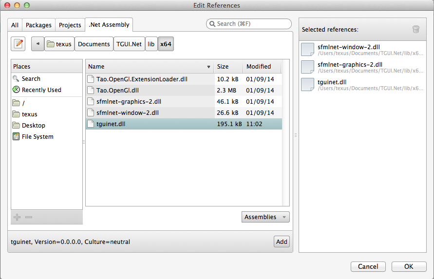
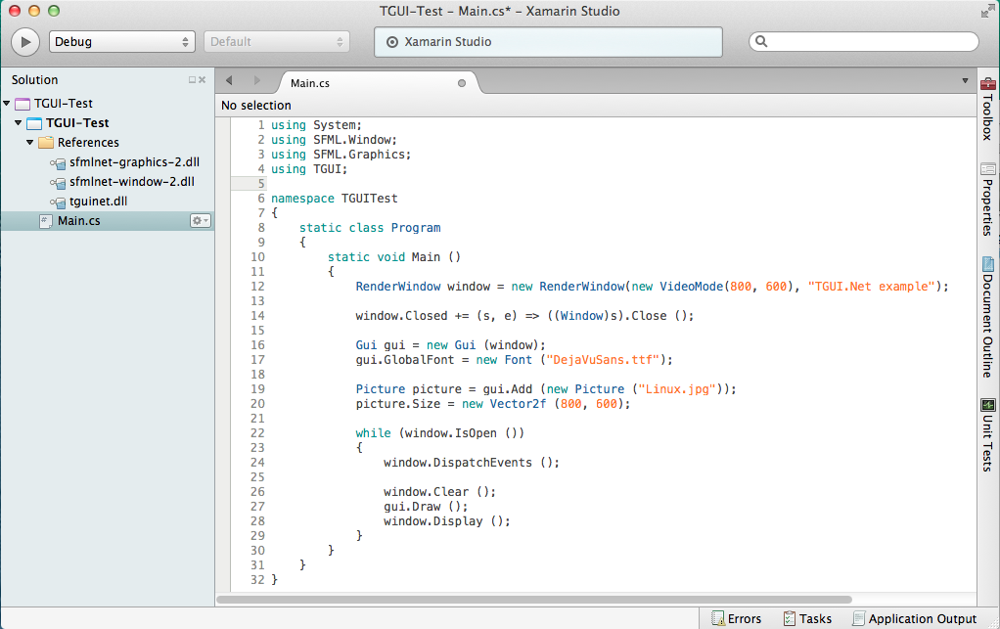
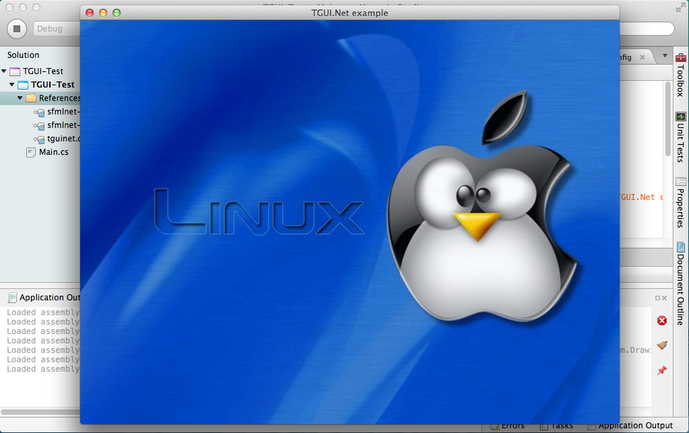

Just open the TGUI.Net.sln file from the build directory with Xamarin Studio and compile it.
The tguinet.dll file will be created in the lib folder.
We will start by creating an empty project.
Add tguinet.dll to the references, together with your sfml libraries.
 Now you should be able to run code that uses TGUI.
 Because SFML.Net is a binding instead of a port, you need to map the CSFML .dll files to corresponding .so files.
Although TGUI.Net is a port and does not require this, it does require opengl which you will have to map.
So next to your executable you will need the following three files (with similar contents) in order to run the executable.
If you create these files with TextEdit, then make sure to save these config files in plain text format and uncheck the "If no extention is provided, use .txt" option.
sfmlnet-window-2.dll.config
{% highlight xml %}
{% endhighlight %}
sfmlnet-graphics-2.dll.config
{% highlight xml %}
{% endhighlight %}
Tao.OpenGl.dll.config
{% highlight xml %}
{% endhighlight %}
{kind=link}
{kind=link}
{kind=link}
{kind=link}
{kind=link}